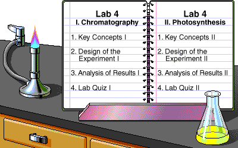

To make the most out of your LabBench experience, review the LabBench Tips.
To make the most out of your LabBench experience, review the LabBench Tips.
|
Key to Icons
|
 Safety
Safety Lab Skills
Lab Skillsby Theresa Knapp Holtzclaw
© 1997, Peregrine Publishers, Inc. All Rights Reserved.
Development Team
In photosynthesis, plant cells convert light energy into chemical energy that is stored in sugars and other organic compounds. Critical to the process is chlorophyll, the primary photosynthetic pigment in chloroplasts.
This laboratory has two separate activities: I. Plant Pigment Chromatography, and II. Measuring the Rate of Photosynthesis. Select the one you want to study, beginning with Key Concepts for that section.
